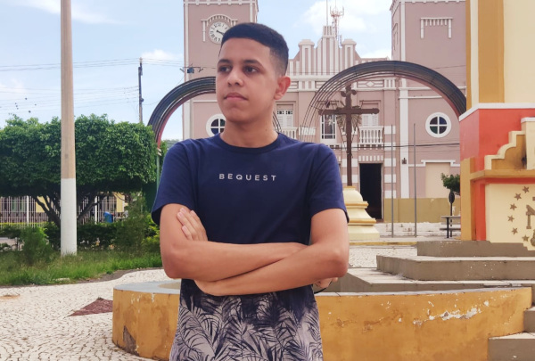

Otavio da Silva Ferreira
Desenvolvedor Front-End e Engenheiro de Software
Idade16 anos
Emailotavioferreira4343@gmail.com
Tel(88) 8888-8888
Habilidades: Tecnologia da Informação
Sou treinado em algumas tecnoligias e consigo resolver alguns problemas, desdes softwares para desktoop, sites, e projetos em hardware. Tenho perfil de liderança, visto que ja intermediei o processo de vários projetos e trabalhos no ambito escolar
Font-End Developer (estagiário)
HTML5
CSS3
BOOTSTRAP
Software Engineer (estagiário)
JAVA
Noções em Robótica
Desing Básico e Tipografia
Educação
III Semestre Ensino Médio Profissionalizabtes
II Semestre Curso Técnico em Informática
Inglês Técnico Basico